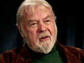
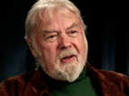

Astronauts & Cosmonauts:
"I believe that these extraterrestrial vehicles and their crews are visiting this planet from other planets which obviously are a little more technically advanced than we are here on Earth."
— Colonel Gordon Cooper, Mercury & Gemini Astronaut
Letter to the United Nations, November 9, 1978 · Video 1 · Video 2
"I happen to be privileged enough to be in on the fact that we have been visited on this planet and the UFO phenomenon is real. It has been covered up by governments for quite some time now."
— Captain Edgar Mitchell, Apollo 14 Astronaut
Video
"...I've been asked [about UFOs] and I've said publicly I thought they [UFOs] were somebody else, some other civilization."
— Astronaut Eugene Cernan, Apollo 17 Commander
LA Times, 1973
"I was testing a P-51 fighter in Minneapolis when I spotted this object. [...] It looked like a saucer, a disk. About the same time, I realized that it was suddenly going away from me - and there I was, running at about 300 miles per hour. I tracked it for a little way, and then all of a sudden the damn thing just took off. It pulled about a 45 degree climbing turn and accelerated and just flat disappeared."
— Captain Donald Slayton, Mercury Astronaut
About his 1951-sighting.
"Statistically it's a certainty there are hugely advanced civilizations, intelligences, life forms out there. I believe they're so advanced they're even doing interstellar travel. I believe it's possible they even came here."
— Dr. Story Musgrave, NASA Astronaut
"Look, I have a pension to worry about. I have a family to take care of, and they told me to just back away from this entirely or else."
— Astronaut James Irwin, Apollo 15
To Frank Stranges after backing out of speaking at a 1976 UFO convention where he was going to "inform us of the strange things he saw on the surface of the moon".
"In my official status, I cannot comment on ET contact. However, personally, I can assure you, we are not alone!"
— Charles J. Camarda (Ph.D.), NASA Astronaut
"It followed us during half of our orbit. We observed it on the light side, and when we entered the shadow side, it disappeared completely. It was an engineered structure, made from some type of metal, approximately 40 meters long with inner hulls. The object was narrow here and wider here, and inside there were openings. Some places had projections like small wings. The object stayed very close to us. We photographed it, and our photos showed it to be 23 to 28 meters away.
[...] Many cosmonauts have seen phenomena which are far beyond the experiences of earthmen. For ten years I never spoke on such things. [...] It only flew straight, but then a kind of explosion happened, very beautiful to watch, of golden light. This was the first part. Then, one or two seconds later, a second explosion followed somewhere else and two spheres appeared, golden and very beautiful. After this explosion I just saw white smoke, then a cloud-like sphere."
— Cosmonaut Victor Afanasyev
Commenting on a UFO sighting that occurred while en route to the Solyut 6 space station in April of 1979.
"For nearly 50 years, the secrecy apparatus within the United States Government has kept from the public UFO and alien contact information."
"We have contact with alien cultures."
— Astronaut Dr. Brian O'Leary
18th September 1994, declarations publicly at the International Forum on New Science in Fort Collins, Colorado
Presidents:
"The phenomenon of UFOs is real. I know that there are scientific organisations which study the problem. It must be treated seriously."
— Soviet President Mikhail Gorbachev
Interview in Soviet Youth, May 4th, 1990.
"I can assure you that flying saucers, given that they exist, are not constructed by any power on earth."
— President Harry S. Truman
April 4, 1950, White House Press Conference
"The US Air Force assures me that UFOs pose no threat to National Security."
— President John F. Kennedy
"...I strongly recommend that there be a committee investigation of the UFO phenomena. I think we owe it to the people to establish credibility regarding UFOs and to produce the greatest possible enlightenment on this subject."
— President Gerald Ford
In a letter he sent as congressman to the Chairman of the Armed Service Committee, March 28, 1966
"I don't laugh at people any more when they say they've seen UFOs. It was the darndest thing I've ever seen. It was big, it was very bright, it changed colors and it was about the size of the moon. We watched it for ten minutes, but none of us could figure out what it was. One thing's for sure I'll never make fun of people who say they've seen unidentified objects in the sky. If I become President, I'll make every piece of information this country has about UFO sightings available to the public and the scientists."
— President Jimmy Carter
At a Southern Governors Conference describing an alleged UFO sighting he had in October of 1969 to reporters while campaigning in 1976 · Video 1 · Video 2
"I looked out the window and saw this white light. It was zigzagging around. I went up to the pilot and said, have you ever seen anything like that? He was shocked and he said, "Nope." And I said to him: "Let's follow it!" We followed it for several minutes. It was a bright white light. We followed it to Bakersfield, and all of a sudden to our utter amazement it went straight up into the heavens. When I got off the plane I told Nancy all about it." (1)
"I occasionally think how quickly our differences worldwide would vanish if we were facing an alien threat from outside of this world." (2)
— President Ronald Reagan
(1) 1974 · (2) Adressing the United Nations General Assembly, 1987
"Unknown objects are operating under intelligent control... It is imperative that we learn where UFOs come from and what their purpose is..." (1)
"Behind the scenes, high-ranking Air Force officers are soberly concerned about the UFOs. But through official secrecy and ridicule, many citizens are led to believe that unknown flying objects are nonsense." (2)
— Admiral Roscoe Hillenkoetter, first Director of the CIA, 1947-1950
(1) Statement for National Investigations Comimittee on Aerial Phenomena, 1960 · (2) New York Times, February 28, 1960
"When the long awaited solution to the UFO problem comes, I believe that it will prove to be not merely the next small step in the march of science, but a mighty and totally unexpected quantum leap" (1)
"We had a job to do, wether right or wrong, to keep the public from getting excited." (2)
— Dr. J. Allen Hynek, Scientific consultant for Air Force Project Blue Book
(1) The Ufo Experience: A Scientific Inquiry, 1972 · (2) On camera shortly before his death in 1985
"Let there be no doubt. Alien technology harvested from the infamous saucer crash in Roswell, N.Mex., in July 1947 led directly to the development of the integrated circuit chip, laser and fibre optic technologies, particle beams, electromagnetic propulsion systems, depleted uranium projectiles, stealth capabilities, and many others.
How do I know? I was in charge! I think the kids on this planet are wise to the truth, and I think we ought to give it to them. I think they deserve it."
— Colonel Philip Corso, Former head of the Foreign Technology Desk for United States Army Research and Development, National Security Council member, Eisenhower Administration.
On camera shortly before his death, 1998
"We must insist upon full access to disks recovered. For instance, in the La case the Army grabbed it and would not let us have it for cursory examination."
— J. Edgar Hoover, first Director of the FBI
Memorandum July 10, 1947
"We already have the means to travel among the stars, but these technologies are locked up in black projects and it would take an act of God to ever get them out to benefit humanity... anything you can imagine we already know how to do."
— Ben Rich, former Head of the Lockheed Skunk Works
Shortly before his death, 1995
"The evidence that there are objects which have been seen in our atmosphere, and even on terra firma, that cannot be accounted for either as man-made objects or as any physical force or effect known to our scientists, seems to me to be overwhelming. A very large number of sightings have been vouched for by persons whose credentials seem to me unimpeachable.
It is striking that so many have been trained observers, such as police officers and airline or military pilots. Their observations have in many instances have been supported either by technical means such as radar or, even more convincingly, by interference with electrical apparatus of one sort or another."
— Baron Hill Norton, former British Chief of Defense Staff, Chairman, Military Committee of NATO, 1974-77
Outspoken about UFOs on numerous occasions. Video
"Of course UFOs are real, and they are interplanetary. The cumulative evidence for the existence of UFOs is quite overwhelming and I accept the fact of their existence."
— Air Chief Marshall Lord Hugh Dowding, Commanding Officer of the Royal Air Force during WWII
Quoted by Reuters, August 1954
"The Air Force had put out a secret order for its pilots to capture UFOs. For the last six months we have been working with a congressional committee investigating official secrecy concerning proof that UFOs are real machines under intelligent control."
— Marine Corps Major Donald E. Keyhoe
During a live TV broadcast on CBS in 1958 in which he was pulled from the air when he began to deviate from the prepared format of the programme. Later interview: Video
"Flying saucers are real. Too many good men have seen them, that don't have hallucinations."
— Captain Eddie Rickenbacker, "American Ace of Aces", medal of honor-winning commander of the 94th Aero Pursuit Squadron in WWI
"I've been convinced for a long time that the flying saucers are real and interplanetary. In other words, we are being watched by beings from outer space."
— Albert M. Chop, deputy public relations director, NASA
True Magazine, January 1965
"Unidentified Flying Objects are entering our atmosphere at very high speeds and obviously under intelligent control. We must solve this riddle without delay."
— Rear Admiral Delmar Fahrney, USNR
Letter to NICAP, 1956
"You now face a new world, a world of change. We speak in strange terms, of harnessing the cosmic energy, of ultimate conflict between a united human race and the sinister forces of some other planetary galaxy." "The nations of the world will have to unite, for the next war will be an interplanetary war. The nations of the earth must someday make a common front against attack by people from other planets".
— General Douglas MacArthur
October 8, 1955, New York Times
"This 'flying saucer' situation is not at all imaginary or seeing too much in some natural phenomena. Something is really flying around. The phenomenon is something real and not visionary or fictitious."
— General Nathan Twining, US Air Force, Chairman of the Joint Chiefs of Staff 1955-1958
Classified letter, September 23, 1947
"...I made an effort to find out what was in the building at Wright Patterson Air Force Base where the information is stored that has been collected by the Air Force, and I was understandably denied this request. It is still classified above top secret."
— Senator Barry Goldwater
In a letter dated March 28, 1975
"It is my thesis that flying saucers are real and that they are space ships from another solar system. There is no doubt in my mind that these objects are interplanetary craft of some sort. I and my colleagues are confident that they do not originate in our solar system."
— Dr. Hermann Oberth, the "father of modern rocketry"
The American Weekly, October 24, 1954
"The least improbable explanation is that these things are artificial and controlled... My opinion for some time has been that they have an extraterrestrial origin."
— Dr. Maurice Biot, leading aerodynamicists and mathematical physicist
Life Magazine, April 7, 1952
"The possibility of reduced-time interstellar travel either by advanced extraterrestrial civilizations at present or ourselves in the future, is not fundamentally constrained by physical principles."
— Dr. Harold Puthoff, Director, Institute for advanced studies at Austin, Author of fundamentals of Quantum Electronics
In Physics Essays, Volume 9, No.1, 1996
"I believe that the scientific community has been seriously misinformed for twenty years about the potential importance of UFOs."
— James Edward McDonald, Atmospheric Physicist
Part of his presentation in front of Statement to House Subcommittee, 1968, in Washington
"I am completely convinced that UFOs have an out-of-world basis."
— Dr. Walther Riedel, chief designer and research director at the German rocket center in Peenemunde
Life Magazine, April 7, 1952
"Of course it is possible that UFOs really do contain aliens as many people believe, and the government is hushing it up. I wouldn't like to comment on that."
— Professor Stephen Hawking
On C-Span Television, as guest lecturer at the second Millennium Evening at the White House on March 6, 1998. Video (at 0:17:41)
"In my mind, there is no question that they're out there. My career is well established. [...] If you want to become a physicist to learn about the unified field theory - you read my books. Therefore, I'm in a position to say: Yes - most likely they are out there, perhaps even visited, perhaps on our moon."
— Professor Michio Kaku
ABC News Quote
 Edgar Mitchell
Apollo Astronaut
Donald Keyhoe
Marine Corps Major
Paul Hellyer
Former Canadian Defence Minister
Baron Hill Norton
British Chief of Defense Staff
Nick Pope
UK Ministry of Defence
Clifford Stone
Sergeant

Robert Dean
NATO Intelligence Analyst
Stanton Friedman
Nuclear Physicist
Edgar Mitchell
Apollo Astronaut
Donald Keyhoe
Marine Corps Major
Paul Hellyer
Former Canadian Defence Minister
Baron Hill Norton
British Chief of Defense Staff
Nick Pope
UK Ministry of Defence
Clifford Stone
Sergeant

Robert Dean
NATO Intelligence Analyst
Stanton Friedman
Nuclear Physicist
 Out of the Blue
UFO Documentary
Out of the Blue
UFO Documentary
{kind=link}